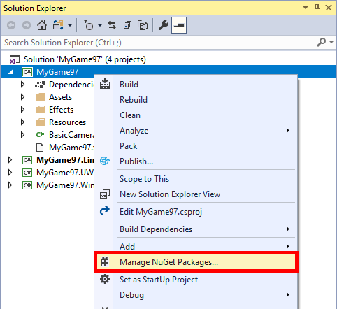
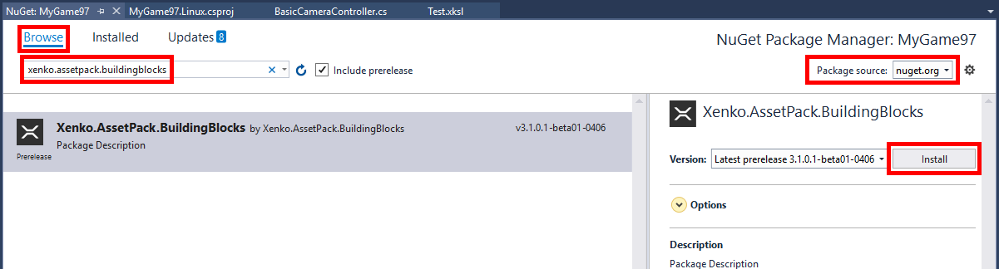

パッケージの使用
初級 プログラマー
プロジェクトを Visual Studio で開く
Note
Game Studio は将来、NuGet パッケージの追加を直接サポートする予定です。
はじめに、すべての変更を保存した後、Visual Studio でプロジェクトを開きます。これは、ツールバーの適切なボタンをクリックすることで簡単に行うことができます。

参照を追加する
ソリューションエクスプローラーで、プロジェクトを右クリックして [NuGet パッケージの管理] を選択します。

ここでは、
Stride.AssetPack.BuildingBlocksパッケージを使うものとしましょう。- [パッケージ ソース] で
nuget.orgまたはすべてを選択します。 - [プレリリースを含める] がオンになっていることを確認してください。
- [参照] タブに移動します。
- Stride アセットパッケージ（ここでは Stride.AssetPack.BuildingBlocks）を [検索] し、[インストール] を選択します。

- [パッケージ ソース] で
Visual Studio プロジェクトを保存します。
Game Studio でアセットを使う
Game Studioで、[File] > [Reload project] を選択します。
これで、参照されているプロジェクトとそのアセットが ソリューションエクスプローラー に表示されるようになります。

Note
これらのアセットは読み取り専用なので、シーンにドラッグ＆ドロップすることはできません。これは近日中に修正される予定です。 その間も、アセットセレクターを使って、既存のモデルやマテリアルの参照をアセットパックのものに変更することができます。